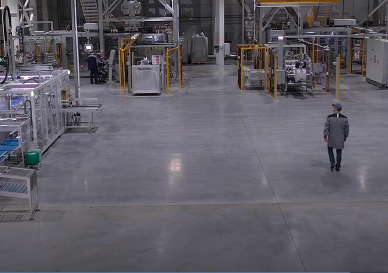

Технологический суверенитет и стандарты качества
Производство АО «ЛИМКОРМ ПЕТФУД» расположено в экологически чистом районе, свободном от ГМО, а современное оборудование ведущих российских и европейских производителей — роботизированные линии фасовки, упаковки и паллетирования, а также высокоточный программируемый дозатор — обеспечивает безупречное соблюдение рецептур и стабильность качества каждой партии
Автоматизированные системы гарантируют прецизионную точность дозирования ингредиентов, а многоступенчатый аудит подтверждает полное соответствие состава строгим международным стандартам сертификации ISO и ХАССП.

Качество LIMKORM: экспертная база для всех
Наш собственный исследовательский центр и аккредитованная производственная лаборатория осуществляют глубокий биохимический анализ и тотальный контроль: от входной проверки сырья до финального тестирования готовой продукции. Современная система управления качеством охватывает все этапы производственного цикла, превращая «Наш Рацион» в продукт, где технологическое единство и научная экспертиза LIMKORM становятся гарантом безопасности и здоровья вашего питомца.
